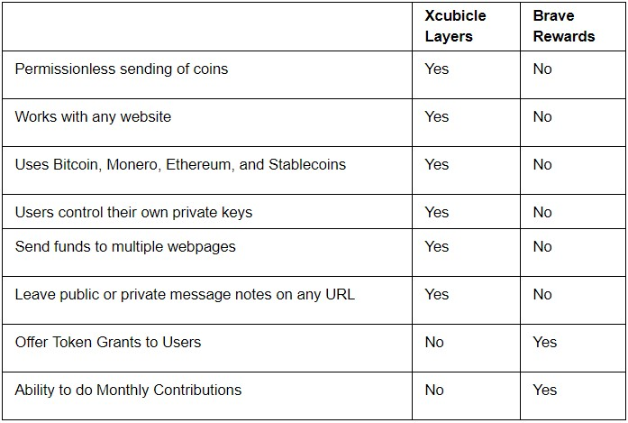

Prevent Fraud
Crowdfunding sites like Gofundme and Kickstarter can have fake campaigns. Marketplace sites like Ebay and Amazon are ripe with 3rd party scammers. Add an extra layer of fraud protection.
New Web Incentives
Enhance sites like Linkedin and Github by creating a reward system to respond to messages or rally support to solve a software issue.
Earn Rewards
Get reward bounties for your contributions to Q&A sites like Quora and Stackoverflow.
What is it?
We've built a browser extension and app letting users tap into new layers of the Internet. Using a mix of technologies, we've given users a new way to create new incentives on any website using these layers.
Layer 1: The Pledge Layer
We’ve built a method of “pledging” ₿itcoin and cryptocurrency on any website directed to a user or owner of the domain regardless if they accept it or not. This new payment layer sits on top of any webpage you visit. By pledging ₿itcoin on specific domains, one can unlock new functions which wasn’t possible natively on the site, all while having full control of your coins that never leaves your wallet.
Layer 2: The Notes Layer
Give users the ability to attach a sticky note to any website. These notes can be used privately for jotting down information when revisiting the same link. Or make them public for anyone to see like a comments section. All notes are stored on a decentralized data cloud encrypted and censorship resistant.
Xcubicle Layers ❤ Brave Rewards

Enhance your existing Chrome based browser.
See our FAQ & Use Cases to learn more.
{kind=link}